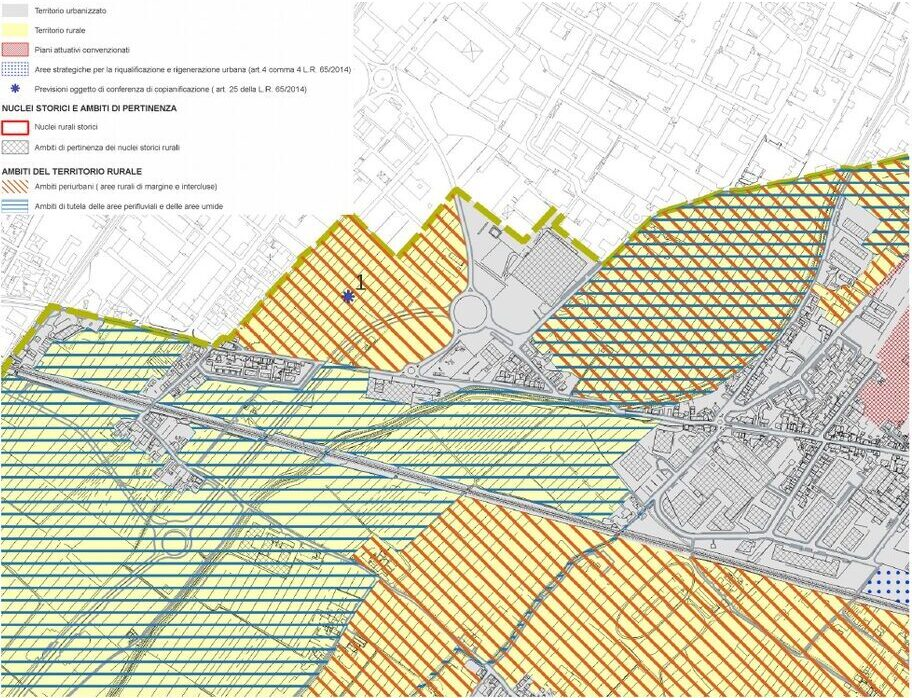

In questa pagina
Conferenza di copianificazione
Livello di verifica: LR 65/2014 (testo al 08/09/2025), artt. 4, 25, 26, 34, 35, 42, 64, 102 e 252 sexies, controllati sul testo. Caso di Prato letto sull'elaborato DP-1.1 del PS 2024.
In una riga. Prima di adottare un piano operativo (PO) che consuma suolo non edificato fuori dal territorio urbanizzato (TU), il Comune porta quelle previsioni davanti a Regione e Provincia o Città metropolitana. La conferenza decide a maggioranza; senza parere favorevole le previsioni non si possono fare, e il parere sfavorevole della Regione vincola comunque.
Quando serve
Di regola (art. 25 c. 1), per i procedimenti avviati dopo l'11/03/2025 (art. 252 sexies), per le previsioni del PO che impegnano suolo non edificato fuori dal perimetro del TU, comprese quelle degli ambiti dell'art. 64 cc. 6 e 8. In più:
- le grandi strutture di vendita, o le aggregazioni di medie strutture con effetti simili: fuori dal TU con nuovo suolo, ma anche dentro il TU, perfino se riusano edifici esistenti (art. 26 c. 1);
- le varianti mediante progetto di un'opera di pubblica utilità con nuovo suolo fuori dal TU, salve le esclusioni del c. 2 (art. 34 c. 1 bis);
- le varianti mediante sportello unico per le attività produttive (SUAP) con nuovo suolo fuori dal TU, se il Comune intende accogliere la proposta (art. 35 c. 1).
Non serve in alcuni casi; i principali:
| Caso | Art. 25 |
|---|---|
| Localizzazioni decise da PIT, PTC o PTCM | c. 1 |
| Sicurezza, pronto soccorso sanitario, difesa idraulica e idrogeologica | c. 2 lett. b |
| Ampliamento di strutture produttive esistenti, per mantenere le funzioni | c. 2 lett. c |
| Opere pubbliche, e ampliamento o adeguamento di quelle esistenti | c. 2 lett. d |
| Interventi dei programmi aziendali agricoli, salvo le trasformazioni dell'art. 64 c. 8 | c. 2 lett. e ter |
| Ricostruzione di volumi demoliti, senza cambio d'uso, di edifici in fasce di inedificabilità assoluta, in aree a pericolosità per alluvioni frequenti con magnitudo severa o molto severa, o a pericolosità geologica molto elevata | c. 2 lett. e quater |
Fuori dal TU non si fanno comunque nuove residenze, salvo le regole del territorio rurale (art. 4 c. 2): la conferenza riguarda le altre trasformazioni (art. 4 c. 7).
Che cosa si prepara
Per ogni previsione il Comune prepara una scheda, con queste voci:
- localizzazione e destinazione d'uso;
- inquadramento su carta, con il perimetro del TU;
- descrizione dell'area e finalità della previsione;
- dimensioni: superficie territoriale e superficie edificabile;
- coerenza con i beni paesaggistici e con la disciplina del PIT;
- pericolosità geologica, sismica e idraulica, vincoli sovraordinati;
- elementi di valutazione, a partire dal consumo di suolo.
La scheda deve rispondere in anticipo alle domande che la conferenza farà (art. 25 c. 5): perché la previsione serve a una strategia del PS (DPGR 32/R, art. 5 c. 2 ter), perché non ci sono alternative di riuso o di diversa localizzazione, come si rispettano il PIT e le invarianti, quali mitigazioni e compensazioni si propongono.
Come si svolge
| Passaggio | Regola | Art. 25 |
|---|---|---|
| Richiesta | Il Comune la chiede prima dell'adozione del PO; per le varianti mediante progetto, l'amministrazione che propone la previsione | cc. 3 bis e 4 |
| Controllo | Si convoca dopo la verifica di completezza formale della documentazione | c. 3 ter |
| Convocazione | La Regione convoca entro 30 giorni dalla richiesta; prima seduta entro 60 giorni; gli elaborati arrivano almeno 15 giorni prima | c. 4 |
| Chi decide | I legali rappresentanti di Regione, Provincia o Città metropolitana, Comune (o ente dell'esercizio associato); i Comuni con effetti sovracomunali partecipano senza voto | c. 3 |
| Decisione | A maggioranza, entro 30 giorni dalla prima seduta; sospensione possibile una volta, fino a 30 giorni. Il parere sfavorevole della Regione è vincolante e motivato | c. 6 |
| Dopo il sì | Il Comune forma il piano con gli artt. 18-20; il PTC o PTCM si integra, se serve con ratifica entro 30 giorni | c. 7 |
| Se serve cambiare il PIT | Accordo di pianificazione (art. 42) | c. 8 |
| Effetti sovracomunali | Perequazione territoriale (art. 102) | c. 9 |
Per le grandi strutture di vendita la conferenza usa anche i criteri dell'art. 26 c. 2: capacità delle strade e delle ferrovie, emissioni, tutela dei siti UNESCO e dei beni paesaggistici, effetti sui negozi di prossimità e sui centri storici.
Un caso reale: Prato, PS 2024
Il PS di Prato conferma 9 previsioni fuori dal TU passate in conferenza. Le schede del DP-1.1 sommano 77.790 mq di superficie edificabile; altrove nel PS il dato è 75.790 mq: da riscontrare. La conferenza si è svolta il 20/02/2023, con le regole dell'art. 25 vigenti all'avvio del PS (2021), che la prevedevano anche per il PS (art. 252 sexies).
La scheda 01: nuovo insediamento produttivo a Mazzone, via delle Lame. Due aree agricole intercluse tra strade e zone urbanizzate, al confine con Montemurlo: 40.000 mq di superficie territoriale e 10.000 di superficie edificabile per industria e artigianato, a completamento della zona produttiva.

I rilievi della conferenza:
- le aree sono «funzionali al Parco agricolo della Piana» (Disciplina del PIT, art. 38 quater): la previsione dipende dalla verifica nell'accordo di pianificazione sul Parco;
- l'area sta su una «direttrice di connettività da ricostruire» della rete ecologica regionale;
- strade e insediamento residenziale segnano già un limite chiaro dell'urbanizzato: ogni nuova costruzione erode un'area rurale interclusa da tutelare, secondo la IV invariante (morfotipo dei seminativi semplificati di pianura).
L'esito. Le aree sono rimaste fuori dal perimetro del Parco agricolo. La previsione è entrata nel PS con prescrizioni aggiuntive: edificato concentrato sul lato occidentale per lasciare libero il varco ecologico, pertinenze verdi che mantengono la tessitura agraria, parcheggi e strade interne con schermature e alberature. I dettagli si definiranno nella scheda del PO, nella convenzione e nel progetto.
Le altre otto schede, con gli esiti della conferenza, sono nell'elaborato DP-1.1 (originale); il verbale non è pubblicato come file a sé (Lettura di Prato). Se il nuovo PO sarà avviato dopo l'11/03/2025, queste previsioni dovranno tornare in conferenza prima dell'adozione: è da verificare.
Da non confondere
- Copianificazione e conferenza paesaggistica. La prima valuta il consumo di suolo fuori dal TU, prima dell'adozione del PO; la seconda valuta la conformazione al PIT, alla fine del procedimento.
- Copianificazione e accordo di pianificazione. Il secondo serve quando bisogna cambiare piani di più enti (art. 42).
- Conferenza di copianificazione e conferenza di servizi. La seconda raccoglie gli assensi su un progetto; la prima valuta previsioni di piano, con il voto vincolante della Regione.
Per l'Esame di Stato
Questa scheda è la sede di riferimento del concetto. Nel Manuale compare anche in: Lettura di Prato. Elenco generato dall'inventario: «la definisce di nuovo» segnala una seconda definizione, da ridurre a un rimando.
Dispense 3
- D0 La logica delle norme: 1 paragrafo
- D2 LR 65: principi e strumenti: 2 paragrafi
- D3 Procedimenti: 3 paragrafi · la definisce di nuovo
Prove svolte 3
- Traccia 2025 II T3: 1 paragrafo
- Traccia 2025 I T1: 2 paragrafi
- Traccia 2026 I T2: 1 paragrafo
Fonti
LR 65/2014, testo al 08/09/2025: artt. 4, 25, 26, 34, 35, 42, 64, 102, 252 sexies. Comune di Prato, PS 2024, elaborato DP-1.1 «Previsioni soggette alla Conferenza di copianificazione», approvazione 2024.